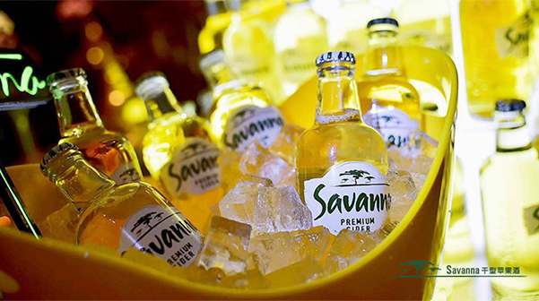
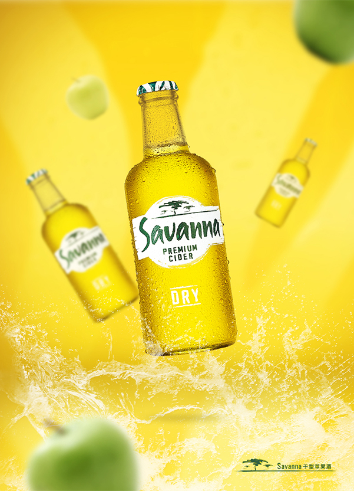
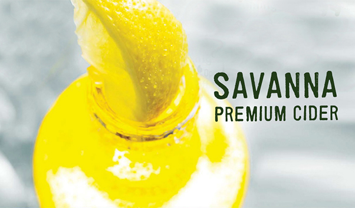
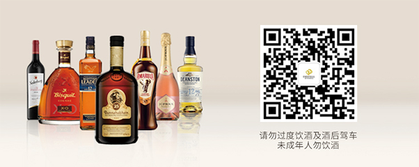

公元1996年
在南非开普敦的一个酒吧里，有位叫戴尔·雷恩斯的酒保。某日午后，他灵光一闪，将小瓣柠檬插入Savanna的瓶颈中饮用； 此刻，他感受到，整个酒瓶就像草原上燃起的熊熊野火一般。时至今日，Savanna最佳的饮用方式，仍是将小瓣柠檬插入瓶颈中饮用。
目前，Savanna已经在全球超过60多个国家和地区销售，并享有南非第一果酒品牌、全球十大苹果酒品牌之一的美誉。以往的果酒，大多是易拉罐包装、口味偏甜的女士饮料。所以口味甜酸适中的Savanna一经问世，即刻风靡市场；同时也吸引了更多的男性消费者。
这款富含≥80%纯天然苹果汁、有着独特矮胖玻璃瓶包装设计的优质干型苹果酒；口味甜酸度适中的Savanna，让你感觉身处非洲大草原一般，自然而又饱含野性。
